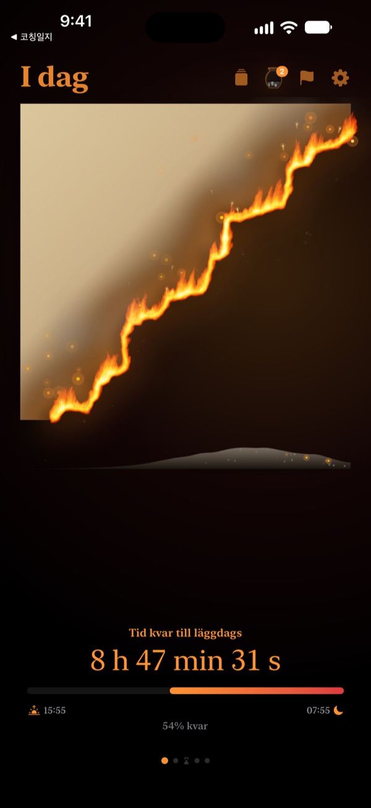
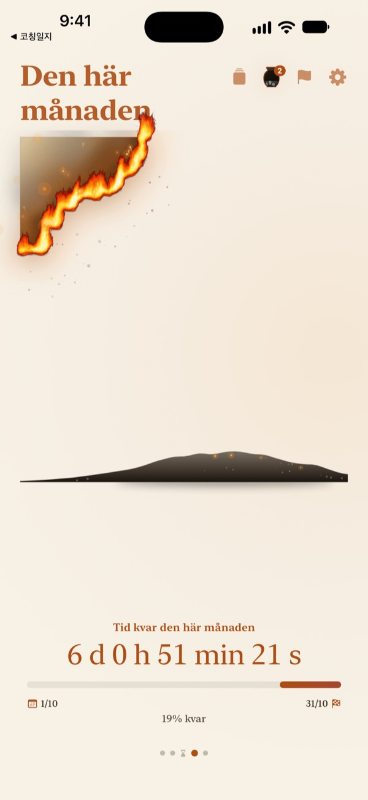
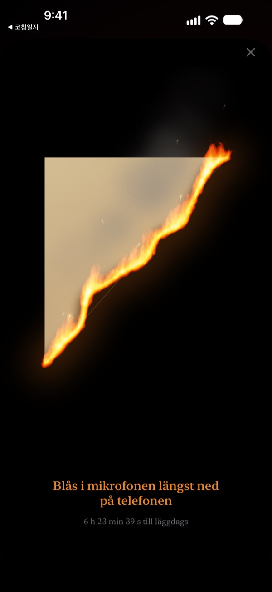
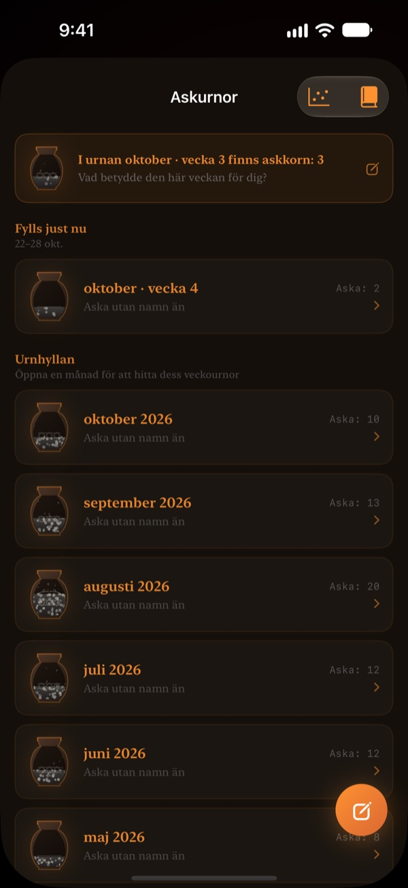

Det som finns kvar av i dag
brinner framför dig
En kväll som ser harmlös ut som en siffra känns annorlunda som pergament i lågor. En halvtimme före läggdags blåser du på skärmen, släcker elden och avslutar dagen.
Det brinnande pergamentet, att blåsa ut lågan och reflektionerna är gratis.

Testa att blåsa ut den
Flytta klockan till strax före läggdags, håll sedan in knappen eller blås i mikrofonen.
Har klockan plötsligt blivit midnatt?
Du äter middag, sätter dig en stund och sedan är dagen slut. Siffrorna på klockan ser likadana ut varje kväll, så du märker inte att tiden rinner iväg. Brinnande Pergament visar resten av dagen som pergament som brinner ner, så att du märker det innan kvällen försvinner.
Dag, vecka och år brinner ner
Från att du vaknar till läggdags brinner pergamentet långsamt. Se på samma sätt vad som återstår av veckan, månaden och året.
Lägg till ett mål med datum som deadline så räknar den ner bredvid.

Blås ut dagen
Från 30 minuter före läggdags blåser du på det brinnande pergamentet och släcker elden. Bara styrkan i andetaget används, inget spelas in.
Biten som blir kvar sparas. Vänd på den och skriv en rad om dagen på baksidan.

Tiden som gått blir aska
Se tillbaka på dagen med en rad och placera den som en punkt i ett diagram med två axlar efter vad tiden gick till. Reflektionerna samlas i askurnor per vecka och månad och kan läsas igen i Reflektionsboken.
Askans flöde visar vart tiden tog vägen med ett fördelningsdiagram och en glödkalender.

Kom igång i tre steg
- 1
Ställ in uppstigning och läggdags
Tryck på kugghjulet uppe till höger. Pergamentet tänds och slocknar efter det.
- 2
Välj period
Svep mellan dag, vecka, månad och år, eller dölj sidor du inte behöver i Inställningar.
- 3
Lägg till en widget
På hemskärmen eller låsskärmen ser du tiden som är kvar utan att öppna appen.
Här ser du tiden som är kvar
- Dag
- Från att du vaknar till läggdags
- Vecka · Månad · År
- Vad som återstår av veckan, månaden och året
- Fritid
- Veckans pergament brinner bara under timmarna du sparar åt dig själv (Pro)
- Deadlines
- Tid kvar till ett måls datum. En är gratis
- Widgetar på hemskärmen
- Dagens pergament i liten, mellan och stor. Vecka, månad, år och deadlines i liten och mellan
- Widgetar på låsskärmen
- Rund, rektangulär och på en rad
- Dynamic Island · Live Activity
- Från en timme före läggdags eller hela dagen. Välj eller stäng av i Inställningar
Expandera Dynamic Island för att se det brinnande pergamentet med hela nedräkningen.
Pergamentet är gratis. Pro rymmer mer.
Gratis
- Pergament för dag, vecka, månad och år
- Blås ut lågan och samla bitar
- Reflektioner på en rad, askurnor och Reflektionsbok
- Morgonkoll, gärna med sömndata från Hälsa
- Widgetar för hem- och låsskärm, Dynamic Island
- En deadline
Brinnande Pergament Pro
- Bränn bara din egen fritid
- Teman: Månskens-hanji, Celadon, Skymning
- Lågor: Präriebrand, Glöd, Tomtebloss
- Dela bitarna som kort och affischer
- Exportera Reflektionsboken som PDF
- Tolv månader av askans flöde
- Obegränsat med deadlines
Ingen prenumeration. Ett köp för alltid, med alla Pro-funktioner som kommer senare.
Ny enhet? Tryck på Återställ köp i Inställningar.
Vanliga frågor
Widgeten visar en annan tid än appen.
iOS ritar inte om widgetar på hemskärmen varje sekund. När du öppnar appen stämmer de igen. En nedräkning sekund för sekund finns i Dynamic Island och i Live Activity på låsskärmen.
Jag blåser men elden slocknar inte.
Du kan blåsa ut den först 30 minuter före läggdags. Kontrollera att mikrofonåtkomst är tillåten och blås jämnt i ungefär en sekund nära mikrofonen längst ner på iPhone. Ett kort ljud räcker inte.
Spelas min röst in?
Nej. Bara hur hårt du blåser mäts. Inget ljud spelas in eller sparas.
Vad visas medan jag sover?
Efter läggdags visas ett brinnande hjärta som visar hur långt natten har kommit tills du vaknar. På morgonen frågar appen om du gick och lade dig i tid; var du sen börjar dagens pergament med en lika stor svedd bit. Kopplad till Hälsa använder den din registrerade insomningstid utan att fråga.
När kommer notiserna?
En timme före läggdags. Kommer de inte, kontrollera Inställningar > Notiser > Brinnande Pergament.
Drar appen mycket batteri?
Nedräkningen i appen ändras varje sekund, men widgetar uppdateras strömsnålt av iOS, så påverkan är liten.
Var sparas mina data?
Uppstigning och läggdags, deadlines, reflektioner och urnor stannar på din enhet. Utvecklaren får bara anonym användningsstatistik, kraschdiagnostik och feedback som du själv skickar. Ingen reklam, ingen spårning.
Är Pro en prenumeration?
Nej. Du betalar en gång och har det för alltid. På en ny enhet trycker du på Återställ köp i Inställningar.
Buggar, idéer eller andra frågor? Skriv till leeo@kakao.com.